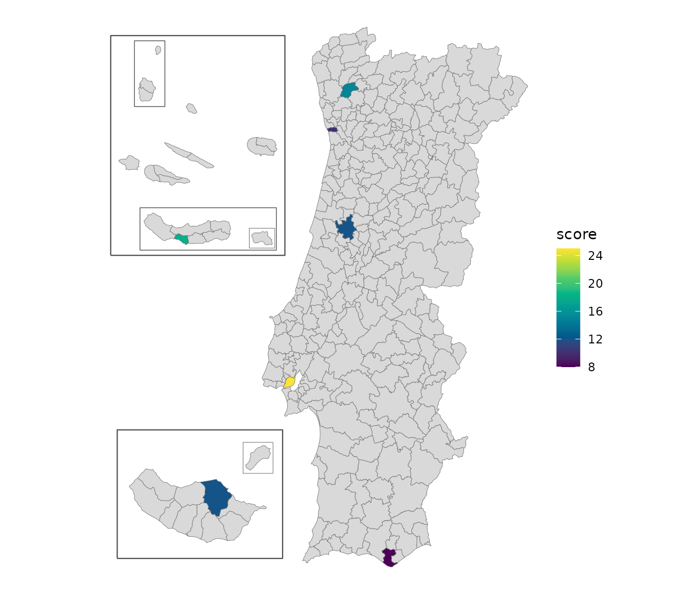

geopt provides maps of Portugal that are ready to plot, with the Açores and Madeira included, and the tools to put custom data on them. It also keeps track of how the boundaries have changed over the years, and downloads the full-resolution official data when needed.
This page is a short tour. Each section points to the guide that covers its topic in full.
Portugal’s units in brief
geopt can draw any of these levels. The level value is
what its functions expect:
level |
What it is | Units |
|---|---|---|
"freguesia" |
Civil parish, the smallest administrative unit. | 3 259 |
"municipio" |
Municipality (município, also called concelho). LAU units | 308 |
"distrito" |
District on the mainland. Each island in Açores and Madeira | 29 |
"nuts1", "nuts2",
"nuts3"
|
The EU’s statistical regions (NUTS) | 3, 9, 26 |
"uls" |
Local health units (Unidades Locais de Saúde) and their island equivalents | 55 |
"reg_saude" |
Health regions (regiões de saúde) | 7 |
"aces" |
Groups of primary-care centres (ACES), the health units before 2024 | 71 |
"uls_municipio", "aces_municipio"
|
ULS and ACES for data by municipality: those that share a municipality are combined | 50, 66 |
Freguesias and municipalities also have official codes. A freguesia’s
code (DTMNFR) has six digits: the first four are its municipality’s code
(DTMN), and the first two are its district’s (DT). These are the names
DGT and INE use today. Older datasets may call them DICOFRE and DICO.
For example, Gualtar, "030319", is a freguesia of Braga
municipality ("0303"), in Braga district
("03").
A map in one line
df <- data.frame(
concelho = c("Porto","Lisboa","Braga","Coimbra","Faro","Lagoa (Açores)","Santana (RAM)"),
score = c(10, 25, 15, 12, 8, 18, 12)
)
plot_pt(df, value = "score", by = c(municipio = "concelho"))
#> get_map: 301 boundaries have no data row (NA fill).
by = c(municipio = "concelho") tells geopt that the
concelho column holds municipality names. geopt matched
each name to its municipality, ignoring accents and case, and picked the
right Lagoa: there are two, one in the Algarve and one in the Açores.
The islands are moved next to the mainland so the map stays readable.
For the mainland alone, add islands = "none".
The result is a regular ggplot that can be styled using native
ggplot grammar. For an interactive map, add
renderer = "echarts":
Check what matched
When every name is found, matching happens quietly. When some aren’t, geopt says so instead of guessing:
df <- data.frame(
concelho = c("Porto", "Lagoa", "Lisbon"),
score = c(10, 18, 25)
)
joined <- pt_join(df, by = c(municipio = "concelho"))
#> Warning: pt_match: 1 ambiguous name(s) returned NA. Pass `context` or use codes.
#> 'Lagoa' (2 candidates: Faro, Ilha de São Miguel)
#> Warning: pt_match: 1 unmatched name(s): Lisbon
#> pt_join: 1/3 row(s) matched at municipio level.pt_join() adds the official codes to the data frame.
pt_match_report() then shows what happened to each
name:
pt_match_report(joined)
#> input matched_name code method dist
#> 1 Porto Porto 1312 exact NA
#> 2 Lagoa <NA> <NA> ambiguous NA
#> 3 Lisbon <NA> <NA> unmatched NATwo municipalities are called Lagoa, so geopt leaves it unmatched,
with the method “ambiguous” rather than pick one. “Lisbon” is an unknown
name to geopt, therefore the method shows “unmatched”. To solve each of
these, specify which Lagoa is meant by providing context - adding
“(Açores)” or “(RAA)” to the name - and map the unknown name with
aliases:
df$concelho[2] <- "Lagoa (Açores)"
joined <- pt_join(df, by = c(municipio = "concelho"),
aliases = c(Lisbon = "Lisboa"))
#> pt_join: 3/3 row(s) matched at municipio level.
joined[, c("concelho", "dtmn", "municipio", "nuts3", "reg_saude")]
#> concelho dtmn municipio nuts3 reg_saude
#> 1 Porto 1312 Porto Área Metropolitana do Porto Norte
#> 2 Lagoa (Açores) 4201 Lagoa Região Autónoma dos Açores Açores
#> 3 Lisbon 1106 Lisboa Grande Lisboa LVTBesides the code, pt_join() adds the regions each unit
belongs to, which is useful even when no map is drawn.
plot_pt() and get_map() match names the same
way, and warn the same way.
vignette("joining-data") covers joining by code,
freguesia names, names from older data, and fuzzy matching for
typos.
Maps as sf objects
plot_pt() is a shortcut. For more control over the
plotting, get_map() returns the same map as an sf object,
which works with ggplot2, tmap or any other spatial package:
m <- get_map("nuts3")
head(m[, c("nuts3_cod", "nuts3", "area_ha")])
#> Simple feature collection with 6 features and 3 fields
#> Geometry type: MULTIPOLYGON
#> Dimension: XY
#> Bounding box: xmin: -8.881058 ymin: 40.75888 xmax: -7.171606 ymax: 42.1482
#> Geodetic CRS: WGS 84
#> nuts3_cod nuts3 area_ha geometry
#> 1 PT111 Alto Minho 221884.2 MULTIPOLYGON (((-8.519346 4...
#> 2 PT112 Cávado 124579.1 MULTIPOLYGON (((-8.792077 4...
#> 3 PT119 Ave 145136.5 MULTIPOLYGON (((-8.440636 4...
#> 4 PT11A Área Metropolitana do Porto 204126.9 MULTIPOLYGON (((-8.789006 4...
#> 5 PT11B Alto Tâmega e Barroso 292190.8 MULTIPOLYGON (((-7.325235 4...
#> 6 PT11C Tâmega e Sousa 183151.5 MULTIPOLYGON (((-8.379446 4...Besides one row per region, the result has a few extra rows for the
frames drawn around the islands, marked in the geopt_type
column.
get_map() can also join data, with the same
data and by arguments as
plot_pt().
For boundaries in their true positions, without frames, use
islands = "in_place", or the bundled datasets:
pt_freguesias, pt_municipios,
pt_distritos, pt_nuts1, pt_nuts2,
pt_nuts3, pt_uls, pt_reg_saude,
pt_aces, pt_uls_municipio and
pt_aces_municipio.
vignette("map-compositions") shows how to change the
island layout and the frames and how to map a single region, such as the
Açores, with examples for ggplot2, tmap, echarts4r and plotly.
Boundaries change over time
Portugal’s boundaries are redrawn from time to time, and data collected before a change uses the old units. geopt calls each version of a set of boundaries a vintage. Three things change, each on its own schedule, so each has its own argument:
| What changes | Argument | Vintages |
|---|---|---|
| Freguesias | admin_vintage |
"2001" and "2011" (the 2001 and 2011
censuses), "2013", "2025" (current) |
| NUTS regions | nuts_vintage |
"2002", "2013", "2024"
(current) |
| Health regions | health_vintage |
"2022" (before the 2024 reform), "2024"
(current) |
Each *_vintage argument is optional: left out, it means
the current vintage.
Municipalities haven’t changed since 1998, so they’re the same in every vintage.
pt_lookup() returns a table of units and the regions
they belong to, for the requested vintages. The NUTS regions were
revised in 2024. Lisboa and Setúbal are now in different NUTS 2 regions,
but until then they shared one:
now <- pt_lookup("municipio")
now[now$municipio %in% c("Lisboa", "Setúbal"), c("municipio", "nuts2_cod", "nuts2")]
#> municipio nuts2_cod nuts2
#> 153 Lisboa PT1A Grande Lisboa
#> 229 Setúbal PT1B Península de Setúbal
before <- pt_lookup("municipio", nuts_vintage = "2013")
before[before$municipio %in% c("Lisboa", "Setúbal"), c("municipio", "nuts2_cod", "nuts2")]
#> municipio nuts2_cod nuts2
#> 153 Lisboa PT17 Área Metropolitana de Lisboa
#> 229 Setúbal PT17 Área Metropolitana de LisboaA statistical series published before 2024 uses PT17, a
code that no longer exists.
Names from before a reorganization still match. In 2013, Braga’s
freguesia of Sé was merged with two others. geopt finds the freguesia
that covers it today, and marks the match as historic:
pt_match("Sé", level = "freguesia", context = "Braga")
#> [1] "030364"
#> attr(,"report")
#> input matched_name code method dist
#> 1 Sé Braga (Sé) 030364 historic NAcontext = "Braga" says which municipality to look in,
since several cities have a freguesia called Sé.
vignette("vintages") covers converting data between
vintages, maps of older years, and NUTS revisions.
Downloading official data
The bundled boundaries are simplified so they plot quickly. geopt can also download official data: census data from INE, the statistics institute, down to the level of city blocks, and the full-resolution official boundaries (CAOP) from DGT, the mapping agency. Downloads are cached, so each file is only fetched once.
# 2021 census data for Braga's statistical sections, with their boundaries
braga <- get_censos("Braga", level = "seccao")
# Full-resolution municipality boundaries for the mainland
client <- GeoClient$new()
mun <- client$get_caop("continente", "municipio")pt_censos_vars lists the census variables available for
each year and level. vignette("downloading-data") covers
the rest, including filtered queries to DGT’s online service.
Where to go next
-
Change the island layout, draw frames around the
islands, or use tmap or echarts4r instead of ggplot2:
vignette("map-compositions") -
Get data onto the map by code or by name, including
ambiguous and misspelled names:
vignette("joining-data") -
Map ULS, regiões de saúde or ACES:
vignette("health-geographies") -
Work with older boundaries, or convert freguesia
data across reorganizations:
vignette("vintages") -
Download full-resolution CAOP, INE census data, or
query DGT’s online service:
vignette("downloading-data")